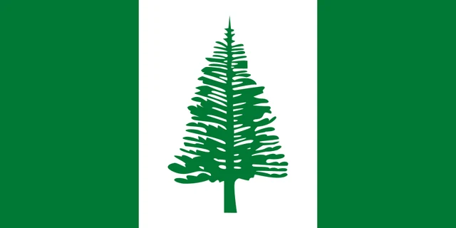
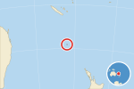
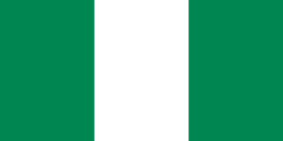
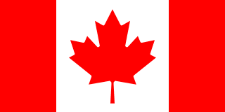

Flag of Norfolk Island
Norf'k Ailen
Territory of Norfolk Island · Territories

What the flag looks like
Three vertical bands of green, white and green, the white band slightly wider, with a green Norfolk Island pine in the centre.
What it means
The Norfolk Island pine is the island's emblem, a tall native conifer, and the green stands for the island's plant life.
How to remember it
Norfolk Island is Nigeria's green-white-green with a tall pine tree planted in the middle, the way Canada plants a maple leaf.
Fun facts
- Many islanders descend from the Bounty mutineers and their Tahitian companions, who moved from Pitcairn Island in 1856.
- Australia abolished the island's Legislative Assembly and its self-government in 2015.
Norfolk Island at a glance
- Status
- External territory of Australia
- Sovereign state
- Australia
- Capital
- Kingston
- Region
- Australian external territory
- Population
- 2,188
- Area
- 35 km²
- Languages
- English, Norfuk
- Currency
- Australian dollar ($)
- Flag adopted
- 1980
Flags often confused with Norfolk Island

NigeriaNigeria and Norfolk Island are both green-white-green vertical stripes. Nigeria's flag is plain; Norfolk Island has a green pine tree on the white band.
CanadaCanada and Norfolk Island both have a wide white central band between coloured side bands with a plant symbol in the middle. Canada is red with a red maple leaf; Norfolk Island is green with a green pine tree.Learn the flag of Norfolk Island and every other flag with short daily lessons.
Practice with Learn the Flags